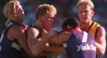

Friday March 26 1999
Dockers blow derby

FREMANTLE came as close as they ever have yesterday to knocking over Perth`s home-town bullies the West Coast Eagles, but only after they all-but wrote themselves out of contention in the first half.In a gripping last 15 minutes at Subiaco before a packed house, Fremantle`s star recruit Tony Modra emerged as both hero and villain. He raised the prospect of an unlikely Dockers` win with a deft tap back to team-mate Craig Callaghan, then missed two set shots to let the Eagles hold on by four points.
Modra was hardly the lone culprit in front of goal in the last quarter as Fremantle posted a wayward five goals nine to finish a straight kick in arrears.
But as new coach Damian Drum will no doubt have pointed out, the Dockers wouldn`t have needed to rely on such a miraculous comeback had they not let the Eagles skip out to a 47-point lead.
Drum said he felt `sick in the guts` at the result, the Dockers` ninth straight derby defeat. He said Fremantle failed to `show up` for the first quarter, before squandering several chances to steal the game.
`It is like losing a final and you`re out of it,` he said. `We had an opportunity to win four points and we just blew it.` Eagles coach Michael Malthouse said the final quarter should serve as a `wake-up` call to his side, who scraped home without the services of veterans Peter Matera and Chris Mainwaring and with an underdone Glen Jakovich and Brett Heady.
Malthouse said he felt his runners losing steam 10 minutes before halftime.
Any pre-season hopes of an overnight Fremantle renaissance were scotched within the first 20 minutes as the Eagles powered to a six-goal lead through Chad Morrison, Scott Cummings, Ben Cousins, Fraser Gehrig and Phillip Matera.
Drum has set about drilling a new, direct brand of football into his club but the result yesterday was plenty of high, long kicks forward easily rebounded by the taller, more experienced Eagles defenders.
If Modra was to have any chance against Ashley McIntosh he had to have it delivered out in front and into space.
Instead, the Fremantle ball carriers sent them low, high, wobbly and wide.
Only a well-deserved goal from first-gamer Trent Carroll, who had an intriguing duel with teenager David Wirrpunda, and a timely snap from ruckman Matthew Burton kept Fremantle vaguely in touch at the first change.
The Eagles built on their 38-point, quarter-time lead when Cummings marked out in front, popped it over to Michael Braun, who in turn found Jason Ball lumbering into the square.
Fremantle answered through Brodie Holland and it was his remonstration with Ben Cousins after the kick that led to a near all-in push-and-shove in the Dockers` forward pocket. No doubt the AFL will be tallying up the fines from the tag-team te * te-a * -te * te. Docker Jess Sinclair for one was booked for a charge on Cousins.
The Eagles unveiled their new forward structure built around the straight-leading work of Port Power recruit Scott Cummings, who finished with four goals.
Cummings` team-mates relished the new-found focal point, swooping into the space created in the wake of the burly full-forward.
Dean Kemp was back to his ball-getting best, picking up 25 possessions despite the attention of former Tiger Ashley Prescott, Brad Wira and Dodd and new skipper Chris Bond.
Like derbies past, the Eagles` superior body strength came to the fore with several Dockers failing to keep their feet in the clinches. And Jakovich rucked virtually unopposed while Matthew Burton and Michael Gardiner rested.
Cricket: Windies fight
Soccer: Just Glorious
Swimming: Bye-bye Kieran